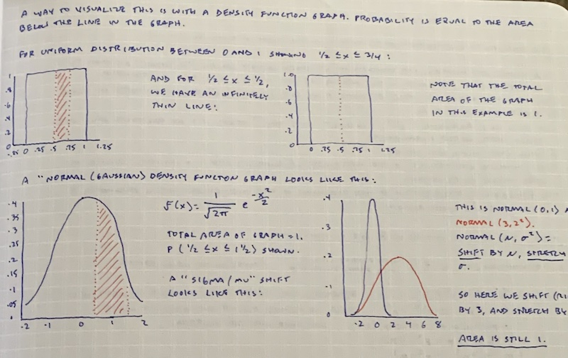

Tufte Takes No Prisoners
tufte
design
Edward Tufte gets raw on chartjunk.
The gloves come off in in “Chartjunk”, chapter 5 of Edward Tufte’s “The Visual Display of Quantitative Information”. Here I am, innocently beginning to think about a poster presentation I have coming up in a couple of months and to imagine design elements that will beautify the project and help make the information easier to understand, and then right in the first paragraph, Tufte drops this:
Graphical decoration, which propers in technical publications as well as in commercial and media graphics, comes cheaper than the hard work required to produce intriguing numbers and secure evidence.
…ouch.
OK, let’s not overreact: he’s not saying “don’t strive for beauty” here. The main point is that visual clutter in charts and graphs, which can take many forms, at best pollutes the message and obfuscates the data, and at worst might be used to (attempt to) conceal a lack of data. That’s fair. He then goes on to show many examples of charts rendered almost unintelligible by over-use of fill patterns, made simple by modern computer-generated graphing systems, pointless use of three-dimensional effects that don’t represent data, and heavy gridlines that visually compete with data points.
On the subject of graph paper, he doesn’t hold back:
Most ready-made graph paper comes with a darkly printed grid. The reverse (unprinted) side should be used, for then the lines show through faintly and do not clutter the data. If the paper is heavily gridded on both sides, throw it out.
A little further on, he shows this monstrosity:
…introduced by this utter decimation:
A series of weird three-dimensional displays appearing in the magazine American Education in the 1970s delighted connoisseurs of the graphically preposterous. Here five colors report, almost by happenstance, only five pieces of data (since the division within each year adds to 100 percent). This may well be the worst graphic ever to find its way into print.
On first read, I thought to myself: “I want to be a connoisseur of the graphically preposterous”. Then I thought it over a bit more and decided I wasn’t so sure.
In any event, I’m around the 2/3 point now in VDQI, enjoying many savagely entertaining examples of what not to do in the visual presentation of data. There are a few good examples scattered in as well, though with much lower overall frequency so far. Studying the wreckage of bad design can absolutely be educational, but with all due deference to the important work of learning from the mistakes of others, it is always easier to critique than to create. I am not “peeking ahead” out of sequence to see if he does this more in subsequent chapters; Saturday Mornings with Tufte™ are deliberately slow and meditative, with a cup of coffee and no electronic devices or distractions. So far this has been an informative and educational read, and I’m looking forward to the rest of it and then to moving on to “Beautiful Evidence”. But I’m still planning to try to create something beautiful in my upcoming poster, and hopefully I can find a way to do that that would also dodge the well-deserved barbs aimed at the many failed efforts shown in this book.
(Endnote: I am a big fan of graph paper, and although most of my note-taking these days is on the ipad, I still have a big physical stash of my favorite, whitelines (non-referral link):

It uses a light gray tone with white gridlines instead of black, much easier on the eyes.)
Reuse
Citation
BibTeX citation:
@online{linberg2022,
author = {Steve Linberg},
title = {Tufte {Takes} {No} {Prisoners}},
date = {2022-03-05},
url = {https://slinberg.net/posts/2022-03-05-tufte-takes-no-prisoners},
langid = {en}
}
For attribution, please cite this work as:
Steve Linberg. 2022. “Tufte Takes No Prisoners.” March 5,
2022. https://slinberg.net/posts/2022-03-05-tufte-takes-no-prisoners.